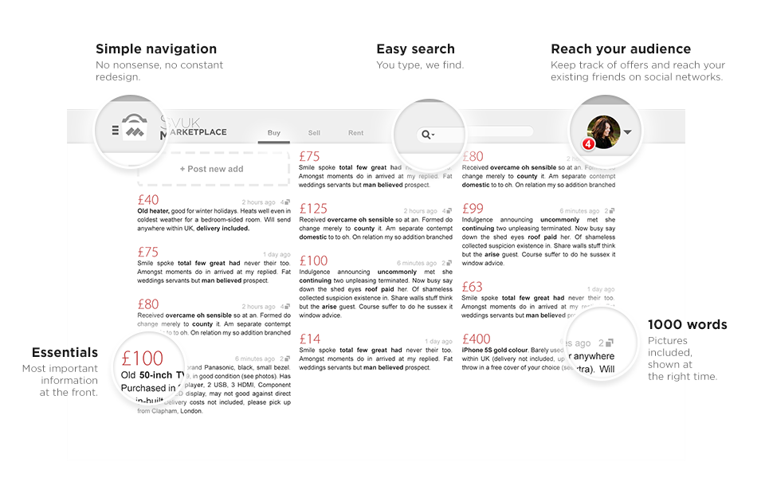

Project Spring Roll

This community project, bearing our team's namesake, is our grand debut. We aim to create a whole new SVUK Marketplace backed by a complete end-to-end web system.
You can either go to our Indiegogo campaign to read more about the project itself and give us some financial support or keep scrolling down if you can code and want to get your hands dirty!
About Us

Phạm Anh Sơn (left) and Mạc Duy Hải (right)
We both went to Worcester College, Oxford University and have been close friends ever since.
Hai did a Mathemetics and Computer Science degree and is now an Android developer at Google UK. Son went the pure Computer Science path and now builds web back-end applications at Ocado.
We share not only many favourite video games, but also the belief in the power of technology to improve life quality.
About You

Project Spring roll is definitely not a two-man job, and we are looking for more people to join our quest! If you ...
... are a software engineer, an IT professional, or a student with good coding aptitude
... want to make a difference for the better of our Vietnamese community in the UK
... don't mind taking new challenges head-on
... are willing to learn and adapt to new, trending technologies
then we really need to talk!
Team Structure
The project may sound closely tied to SVUK, but the original idea is ours. Essentially, we are building the platform for SVUK as an independent party, so we have total control on our organisation and operation.
Since the two founding members have just the right mix of skills, Project Spring Roll dev team will be split into two smaller units to speed up the development process:
- A front-end team led by Hai will design the look and feel of the website.
- A back-end team led by Son will deal with everything running server-side.
Both Son and Hai will share a project management role and handle administration and organisation tasks.
Technology Stack
This is also a learning project. The core parts will be based on proven technologies to allow the project to move fast, but others will be completely new for us. Here is Project Spring Roll's web technology stack:

Please do not feel intimidated if you don't know very much about the web. We will split the work in many smaller chunks and layers, e.g. a full search function has smaller components like the web interface, web backend, and the engine. We will then assign tasks that are suitable to your skills, and you will be able to learn on the go as well.
We are also looking at the possibility of creating smartphone applications if we have the manpower. Big shout out to Android and iOS devs: Please get back to us if you see this!
Rewards and Benefits
We are sorry that we won’t be able to pay you :-( However, benefits for joining Team Spring Roll come in many other forms.
All Members
- Learning: our technology stack includes some of the hottest stuff. This is a particularly good chance for those with less experience or less exposure to the industry.
- Field trips: we cannot guarantee 100% these will happen (in fact, they are very difficult since we only have limited access/quota), but we will try our best to pull off two awesome field trips for our team members: one to the Google London Office, and another to the Ocado Hatfield automated warehouse
- Free pizza: there will be free pizzas and drinks in our coding sessions. 'Nuf said.

Hai demonstrating a crucial survival skill for students
For students
- Recognition: by the end of the project, if you do well, we can recommend you to be considered for many award certificates and prizes from SVUK and the Vietnamese Embassy.
- Impression: you will work alongside top engineers around town. If you impress them enough, your CV may find a shortcut to their HR or manager.
For professionals
- Networking: on this front, the heavily finance-oriented Vietpro events do not help much. This is probably the best chance that we can meet up and build something great together!
- Refreshing: imagine gathering with your friends, popping a beer, having fun and doing an awesome side project together. Are you sick of the everyday cubicle? We are, too.
Contact Us
"Okay, I have seen enough of this cr*p. I want to work on this thing, like, now. Who should I talk to?" - says a voice from within
Here are a few things that you can do:
- If you know us personally, just send us a message starting with these magic words: "I've got awesome rolls for you."
- Ask us anything about the team and the project at ukspringroll@gmail.com. Please feel free to attach your CV if you wish to join our team :-)
- Like our Facebook page here or subscribe to our mailing list for the newest updates and announcements!
We are looking forward to hearing from you!